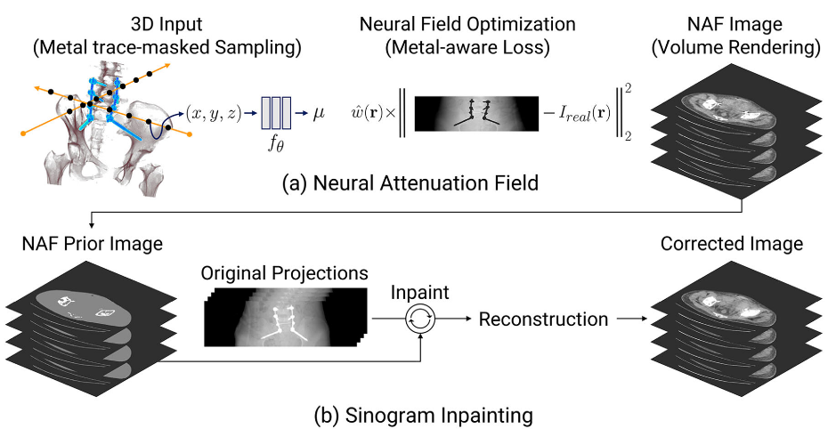
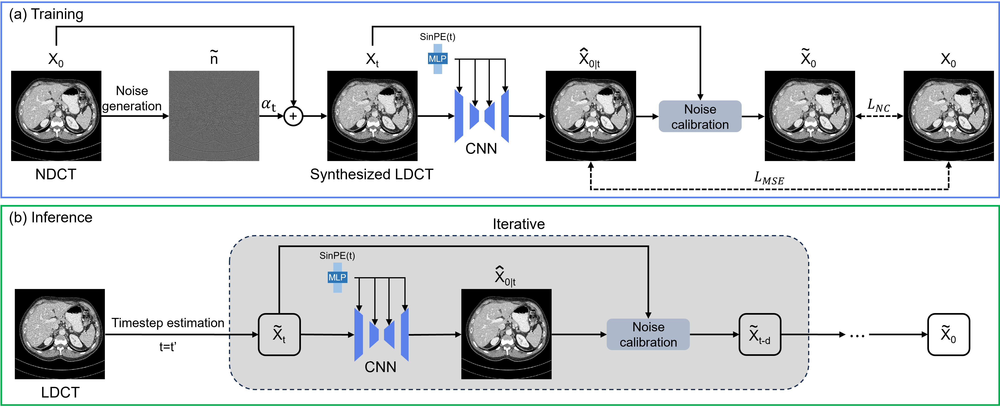
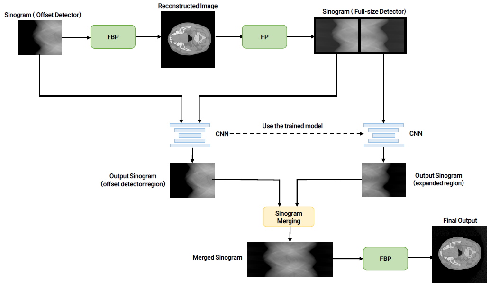
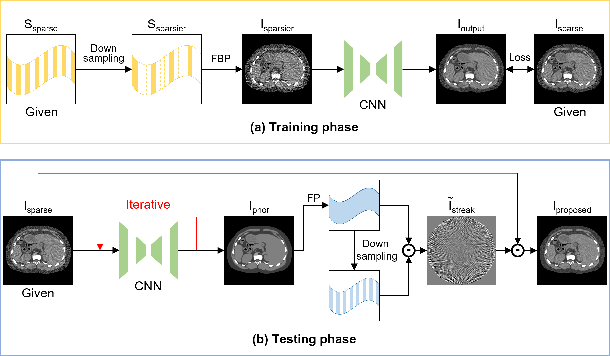
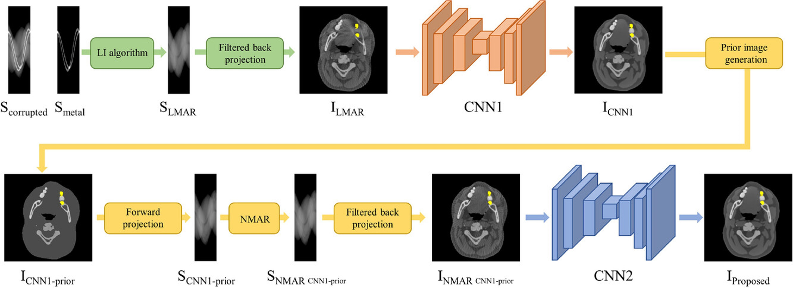
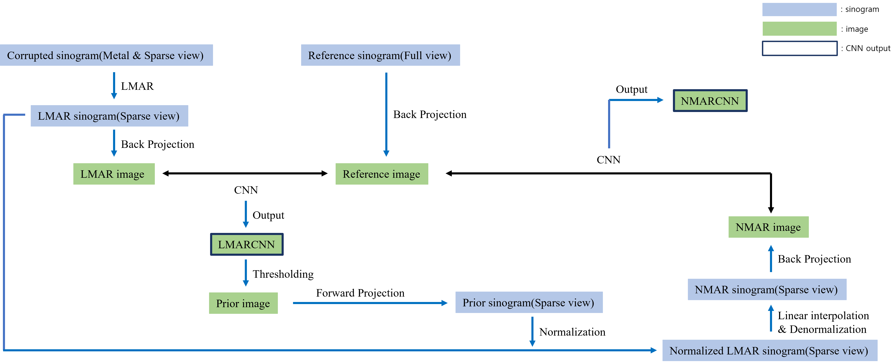
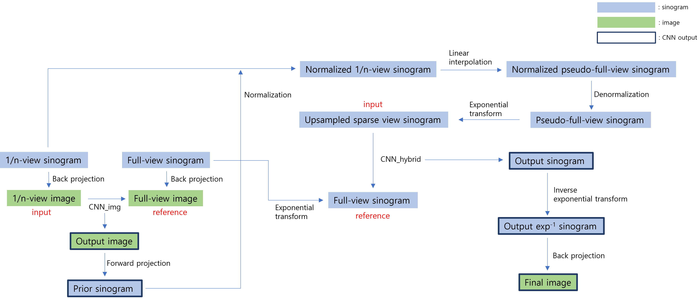

[J4] X-ray CT metal artifact reduction using neural attenuation field prior
Medical Physics, 2025
C: Conference, J: Journal, * Equal contribution

Medical Physics, 2025

Physics in Medicine & Biology, 2025


SPIE Medical Imaging, 2025


CT Meeting, 2022 (Oral presentation) / IFMIA, 2023 (Best Presentation Award)


AAPM, 2021 (Oral presentation)
